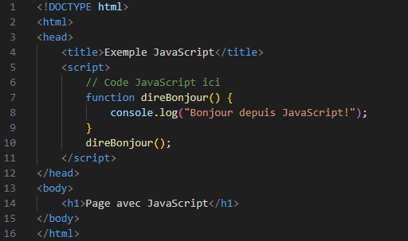
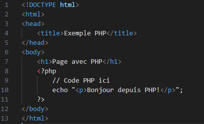

Qu'est-ce que le JAVASCRIPT et PHP ?
JavaScript est un langage de programmation côté client qui permet d'ajouter des fonctionnalités interactives aux pages web, comme la gestion des événements ou la modification du contenu en temps réel. Il s'exécute directement dans le navigateur, offrant ainsi des réponses instantanées aux actions des utilisateurs. PHP est un langage de script côté serveur utilisé pour générer des pages web dynamiques, interagir avec des bases de données et traiter les données des utilisateurs avant que la page ne soit envoyée au navigateur.
Balises couramment utilisées
Voici deux Exemples Ces balises permettent d’intégrer respectivement du JavaScript et du PHP dans des pages web, facilitant ainsi le développement de fonctionnalités interactives et dynamiques.
Balise <script> pour JavaScript : Utilisée pour intégrer du code JavaScript dans une page HTML
Balise <?php ?> pour PHP :Utilisée pour intégrer du code PHP dans un fichier .php
